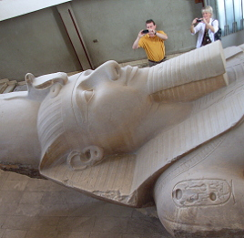

Egypt 2010
Open "Nations Online Project" map of Egypt in NEW window
 The Egypt Trav-E-Log is presented in four geographic areas: Click on "Cairo Area" to view site sequentially. Questions? Contact me at the Juno.com address Dancer2SEAsia.
Special Topics:
Cairo Area
Edited: 25 Feb 2016

Luxor Area
Post: 5 Mar 2016
Red Sea
Edited: 5 Mar 2016
Aswan area
Plan: Mar 2016
Life is Good When You Travel! Start planning your next trip!